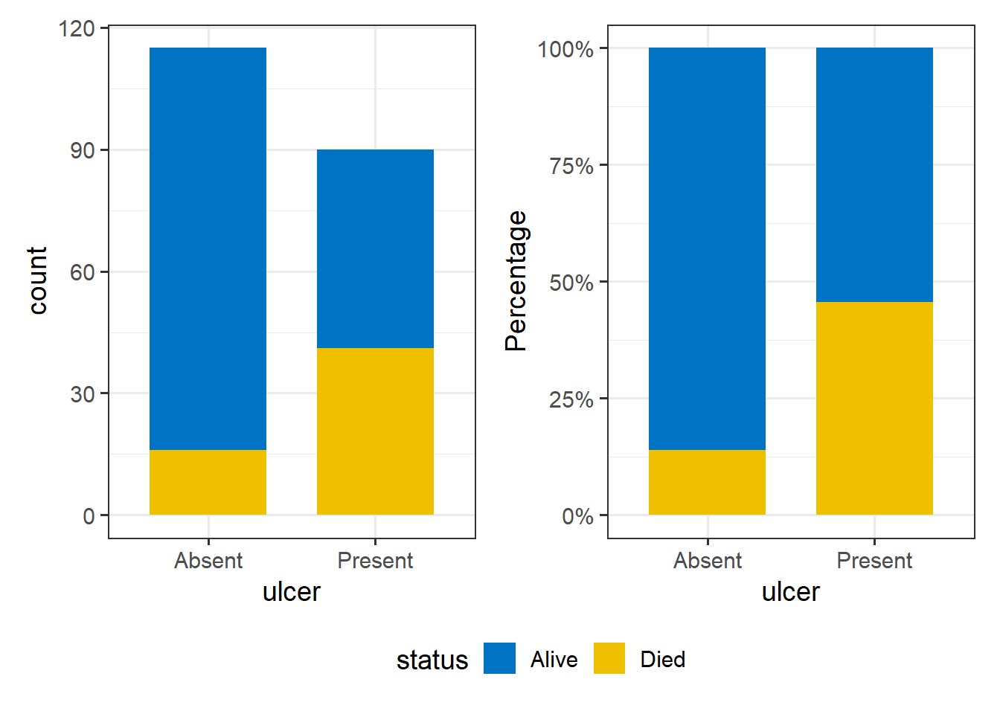

12 Chi-sqaure test of independence
If we want to see whether there’s an association between two categorical variables we can use the Pearson’s chi-square test, often called chi-square test of independence. This is an extremely elegant statistic based on the simple idea of comparing the frequencies we observe in certain categories to the frequencies we might expect to get in those categories by chance.
When we have finished this Chapter, we should be able to:
12.1 Research question and Hypothesis Testing
We will use the “Survival from Malignant Melanoma” dataset named “meldata”. The data consist of measurements made on patients with malignant melanoma, a type of skin cancer. Each patient had their tumor removed by surgery at the Department of Plastic Surgery, University Hospital of Odense, Denmark, between 1962 and 1977.
Suppose we are interested in the association between tumor ulceration and death from melanoma.
NOTE: In practice, the null hypothesis of independence, for our particular question, is no difference in the proportion of patients with ulcerated tumors who die compared with non-ulcerated tumors (\(p_{ulcerated} = p_{non-ucerated}\)).
12.2 Packages we need
We need to load the following packages:
12.3 Preraring the data
We import the data meldata in R:
library(readxl)
meldata <- read_excel(here("data", "meldata.xlsx"))We inspect the data and the type of variables:
glimpse(meldata)Rows: 205
Columns: 7
$ time <dbl> 10, 30, 35, 99, 185, 204, 210, 232, 232, 279, 295, 355, 386,…
$ status <chr> "Alive", "Alive", "Alive", "Alive", "Died", "Died", "Died", …
$ sex <chr> "Male", "Male", "Male", "Female", "Male", "Male", "Male", "F…
$ age <dbl> 76, 56, 41, 71, 52, 28, 77, 60, 49, 68, 53, 64, 68, 63, 14, …
$ year <dbl> 1972, 1968, 1977, 1968, 1965, 1971, 1972, 1974, 1968, 1971, …
$ thickness <dbl> 6.76, 0.65, 1.34, 2.90, 12.08, 4.84, 5.16, 3.22, 12.88, 7.41…
$ ulcer <chr> "Present", "Absent", "Absent", "Absent", "Present", "Present…The data set meldata has 250 patients (rows) and includes seven variables (columns). We are interested in the character (<chr>) ulcer variable and the character (<chr>) status variable which should be converted to factor (<fct>) variables using the convert_as_factor() function as follows:
meldata <- meldata %>%
convert_as_factor(status, ulcer)
glimpse(meldata)Rows: 205
Columns: 7
$ time <dbl> 10, 30, 35, 99, 185, 204, 210, 232, 232, 279, 295, 355, 386,…
$ status <fct> Alive, Alive, Alive, Alive, Died, Died, Died, Alive, Died, D…
$ sex <chr> "Male", "Male", "Male", "Female", "Male", "Male", "Male", "F…
$ age <dbl> 76, 56, 41, 71, 52, 28, 77, 60, 49, 68, 53, 64, 68, 63, 14, …
$ year <dbl> 1972, 1968, 1977, 1968, 1965, 1971, 1972, 1974, 1968, 1971, …
$ thickness <dbl> 6.76, 0.65, 1.34, 2.90, 12.08, 4.84, 5.16, 3.22, 12.88, 7.41…
$ ulcer <fct> Present, Absent, Absent, Absent, Present, Present, Present, …12.4 Plot the data
We are interested in the association between tumor ulceration and death from melanoma. It is useful to plot the data as counts but also as percentages. It is percentages we are comparing, but we really want to know the absolute numbers as well.
p1 <- meldata %>%
ggplot(aes(x = ulcer, fill = status)) +
geom_bar(width = 0.7) +
scale_fill_jco() +
theme_bw(base_size = 14) +
theme(legend.position = "bottom")
p2 <- meldata %>%
ggplot(aes(x = ulcer, fill = status)) +
geom_bar(position = "fill", width = 0.7) +
scale_y_continuous(labels=scales::percent) +
scale_fill_jco() +
ylab("Percentage") +
theme_bw(base_size = 14) +
theme(legend.position = "bottom")
p1 + p2 +
plot_layout(guides = "collect") & theme(legend.position = 'bottom')
Just from the plot, death from melanoma in the ulcerated tumor group is around 40% and in the non-ulcerated group around 13%. The number of patients included in the study is not huge, however, this still looks like a real difference given its effect size.
12.5 Contigency table and Expected frequencies
First, we will create a contingency 2x2 table (two categorical variables with exactly two levels each) with the frequencies using the Base R.
tb1 <- table(meldata$ulcer, meldata$status)
tb1
Alive Died
Absent 99 16
Present 49 41Next, we will also create a more informative table with row percentages and marginal totals.
Using the function summary_factorlist() which is included in finalfit package for obtaining row percentages and marginal totals:
row_tb1 <- meldata %>%
finalfit::summary_factorlist(dependent = "status", add_dependent_label = T,
explanatory = "ulcer", add_col_totals = T,
include_col_totals_percent = F,
column = FALSE, total_col = TRUE)
knitr::kable(row_tb1) | Dependent: status | Alive | Died | Total | |
|---|---|---|---|---|
| Total N | 148 | 57 | 205 | |
| ulcer | Absent | 99 (86.1) | 16 (13.9) | 115 (100) |
| Present | 49 (54.4) | 41 (45.6) | 90 (100) |
The contingency table using the datasummary_crosstab() from the modelsummary package:
modelsummary::datasummary_crosstab(ulcer ~ status, data = meldata)| ulcer | Alive | Died | All | |
|---|---|---|---|---|
| Absent | N | 99 | 16 | 115 |
| % row | 86.1 | 13.9 | 100.0 | |
| Present | N | 49 | 41 | 90 |
| % row | 54.4 | 45.6 | 100.0 | |
| All | N | 148 | 57 | 205 |
| % row | 72.2 | 27.8 | 100.0 |
From the raw frequencies, there seems to be a large difference, as we noted in the plot we made above. The proportion of patients with ulcerated tumors who die equals to 45.6% compared with non-ulcerated tumors 13.9%.
12.6 Assumptions
We can calculate the expected frequencies for each cell using the expected() function from {epitools} package:
epitools::expected(tb1)
Alive Died
Absent 83.02439 31.97561
Present 64.97561 25.02439Here, as we observe the assumption is fulfilled.
12.7 Run Pearson’s chi-square test
Finally, we run the chi-square test:
chisq.test(tb1)
Pearson's Chi-squared test with Yates' continuity correction
data: tb1
X-squared = 23.631, df = 1, p-value = 1.167e-06chisq_test(tb1)# A tibble: 1 × 6
n statistic p df method p.signif
* <int> <dbl> <dbl> <int> <chr> <chr>
1 205 23.6 0.00000117 1 Chi-square test **** There is evidence for an association between the ulcer and status (reject \(H_0\)). The proportion of patients with ulcerated tumors who died (45.6%) is significant larger compared with non-ulcerated tumors (13.9%) (p<0.001).
12.8 Risk Ratio and Odds ratio
Risk ratio
From the data in the following table
epitools::table.margins(tb1)
Alive Died Total
Absent 99 16 115
Present 49 41 90
Total 148 57 205we can calculate the risk ratio by hand: \[ Risk \ Ratio = \frac{\frac{41}{90}}{\frac{16}{115}} =\frac{0.4556}{0.1391} = 3.27\]
The risk ratio with the 95% CI using R:
epitools::riskratio(tb1)$measure risk ratio with 95% C.I.
estimate lower upper
Absent 1.000000 NA NA
Present 3.274306 1.970852 5.439819The risk of dying is 3.27 (95% CI: 1.97, 5.4) times higher for patients with ulcerated tumors compared to non-ulcerated tumors.
Odds ratio
We can also calculate the odds ratio by hand: \[ Odds \ Ratio = \frac{\frac{41}{49}}{\frac{16}{99}} =\frac{0.837}{0.162} = 5.17\] The odds ratio with the 95% CI using R:
epitools::oddsratio(tb1, method = "wald")$measure odds ratio with 95% C.I.
estimate lower upper
Absent 1.000000 NA NA
Present 5.177296 2.645152 10.1334The odds of dying is 5.17 (95% CI: 2.65, 10.13) times higher for patients with ulcerated tumors compared to non-ulcerated tumors patients.
Finnaly, we can also reverse the odds ratio: \[ \frac{1}{OR} = \frac{1}{5.17} = 0.193\]
epitools::oddsratio(tb1, method = "wald", rev = "rows")$measure odds ratio with 95% C.I.
estimate lower upper
Present 1.000000 NA NA
Absent 0.193151 0.09868354 0.37805The non-ulcerated tumors patients has 0.193 (95% CI: 0.098, 0.378) times the odds (of dying) of the ulcerated tumors. This means that the non-ulcerated tumors patients has (0.193 - 1= -0.807) 80.7% lower odds of dying than ulcerated tumors.